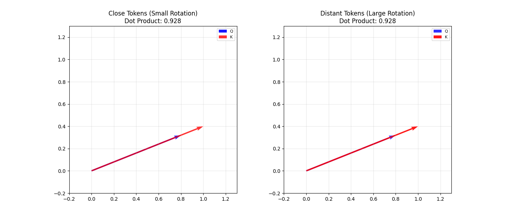
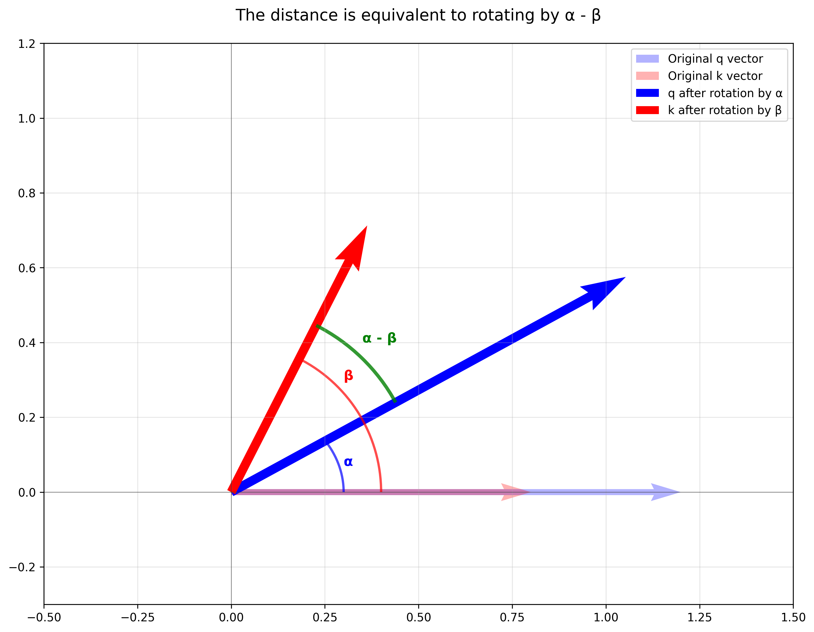

Rotary Position Embedding (RoPE)
Intro
There are plenty of good resources on understanding the transformers architecture out there in the internet. But Rotary Position Embedding (introduced by this paper) is the one piece often poorly explained or not explained at all.
The mathematical operations are rather simple, it’s mainly matrix multiplications. The hard part is understanding the intuition around it, visualizing what it’s doing to vectors, and understanding why it works. Well, that’s what I’ll attempt to provide you with.
I expect you have basic understanding of transformers and attention mechanism throughout this post.
RoPE Intuition
Since transformers don’t have a sense of order and distances, researchers came up with positional embeddings. Here’s what positional embeddings should aim to accomplish:
Tokens closer to each other attend with more higher weight. While tokens far from each other attend with lower weights.
It doesn’t matter whether two words are in the beginning or end of a long sequence, if they’re close to each other, they should (more likely) attend each other with higher weights.
To accomplish the previous constraints, relative positional embeddings are much more useful than absolute positions embeddings.
Conclusion: LLMs should focus on relative positions, which is what really matters.
If you understand these concepts, you’re already half way there.
Before RoPE
The original positional embeddings introduced by Attention is all you need were a pre-defined values (defined by a formula) added with the semantics (meaning) embeddings. The formula made sense, and RoPE does something similar, but mixing semantics and position was very confusing, not only for humans, but for the LLM as well. As it turns out, later research did confirm LLMs were memorizing (overfitting) rather than generalizing the positions, and those LLMs would quickly deteriorate as the sequence length would increase beyond sequences in their training dataset.
One strategy that has shown to be a winning strategy in the early years of Deep Learning: whenever we’re unsure about how to compute useful features for a Neural Network (NN), just let the NN learn by itself! 😝 That’s what LLMs like GPT-3 did, let the LLM learn its own position embeddings. As it turns out, providing too much freedom for NNs increases overfitting risks, and in this case, also poses a hard limit in the context window.
The best efforts would focus on modifying the attention mechanism. Tokens closer to each other will have a higher attention weight, meanwhile tokens far will have a lower weight. So the goal was to modify \(Q\) and \(K\) in a clever way so the dot products would reflect closeness, while preserving the hidden states.
Rotation Intuition
RoPE modifies \(Q\) and \(K\) by applying a rotation to them.
Let \(q\) be the query projection of a token and \(k\) the key projection of another. If the tokens that are close in the text, little rotation will be applied, while distant tokens suffer larger rotation transformation.
Imagine two identical projection vectors, any rotation applied would make those two vectors more far a part! That’s exactly what we want.

Now, this other situation can be confusing: if the two projection vectors are far from each other, the rotation might make them closer! That’s NOT what we want 😱. They’re being rotated because they’re far from each other in the text, so they shouldn’t receive a high attendance weight. Why does it work then?
In 2D, there’s only one rotation axis, which is \(z\). You can only rotate either clock-wise or counter clock-wise
In 3D there’s literally an infinite number of rotation axis. There’s a very low probability that the rotation will make the two vectors get closer to each other.
Modern models usually operate in a very high dimensional space (+10k dimensions), making this even more unlikely.
Remember, in Deep Learning, probabilities is what really matters! So it’s okay to be wrong, as long as the probabilities are low :)
Angle of rotation
The angle of rotation depends on two factors: \(m\) and \(i\). Let’s dive into each of them.
Token absolute position \(m\)
The rotation increases as the token’s absolute position \(m\) increases.
Okay, I know what you’re thinking: \(m\) is absolute position we shouldn’t use it since I said relative positions is what really matters…
Well, here’s the magic, think about a 2D plane, when you rotate one vector by \(\alpha\) and a second vector by \(\beta\), the delta in the angle between them is \(\alpha - \beta\). It doesn’t matter their absolute values, what matters is their differences. So for two tokens with positions \(m\) and \(n\), the rotation applied will modify the angle between them proportional to \(m-n\).

Let’s forget that \(k\) gets rotate and let’s assume we’re always rotating \(q\) only (it’s mathematically accurate since we’re not concerned about the final coordinates, but rather their final distances).
The angle formula
Now that you understand all the concepts and have gained a strong intuition of things it’s okay to throw some equations here. The angle of rotation is defined by \(m\times \theta\), where \(m\) is the token’s absolute position in the text and theta is \(\theta=\text{10,000} ^ {-2(i-1)/d_{model}}\), with \(i \in \{1, 2,... d/2\}\) being the dimensions of the hidden state.
When \(i=1 \Rightarrow \theta=1\) (high) and when \(i=d/2 \Rightarrow \theta \approx 1/10,000\) (low).
Conclusion
- We should find clever ways to inject knowledge to the LLM, instead of letting it learn all by itself
- We do that by providing just the right operations a NN needs to process data, attention and convolutions are a great examples of this
- Closed equation can be extended indefinitely, since you don’t have to learn each position embedding
- That’s why RoPE provides great flexibility of sequence length
- The most important property: attention weights decreases as relative distances increase.
- It’s basically the same intuition behind local attention in the alternating attention architecture.